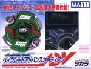

Advance Guardian
| Advance Guardian | |
|  | |
| Number: | MA-11 |
|---|---|
| System: | HMS |
| Type: | Defense |
Contents
| Languages: English|français|italiano |
Bit Protector (BP): Heavy Metal Emblem
The Bit Protector of this Beyblade is Heavy Metal Emblem. It is the first mould verson of Bit Protectors.
Attack Ring (AR): Advance Defenser
- Weight: 18 grams
Advance Defenser has two metal "rollers" which are supposed to help defend against attacks, but this is negligible. This AR also has two wings that come to a point and have shallow slopes that provide minor Upper Attack, though they are too light and gradual to be effective. However, although outclassed, this part can be used for Smash Attack customizations.
Use in Smash Attack Customization
- AR: Advance Defenser (Advance Guardian)
- WD: Circle Wide
- RC: Grip Flat Core (Dragoon MS)
This customization takes full advantage of the little Smash Attack that Advance Defenser has. Although outclassed, this customization will still do well with the Sliding Shoot.
Weight Disk (WD): Circle Heavy
See Circle Heavy
Running Core (RC): Grip Sharp Core
- Weight: 3 grams
Grip Sharp Core has a sharp rubber tip that can be used in Defense customizations. Even though it is outclassed, it still works well if nothing better is a viable option. The main problem is it is a sharp rubber tip; rubber tips have low stamina, while sharp tips are meant to have high stamina. The combination is a waste. It also means that the tip will have less grip or friction with the stadium floor as opposed to wider rubber tips, so it will not defend very well.
Grip Sharp Core can also be used in a "niche" Smash Attack customization called a Re-bounder in conjunction with a high smash attack (and high recoil) AR, such as Seagon Attacker (Sea Dragon). The concept is based on Newton's third law of motion in which "Every action creates an equal and opposite reaction." When an Attack type beyblade, such as a Smash Attacker is used against it, each beyblade is hit with the same amount of force. Normally, this would usually result in a double KO, but the Grip Sharp Core prevents that, and instead will KO the opponent. This, however, is unreliable, especially in larger stadiums. When it does happen, however, it works quite well. It is also worth noting that it works best when the tip is in mint condition. The Re-bounder must also be hit early in the match, because the beyblade loses spin velocity very quickly.
Use In Defense Customization
- AR: Circle Upper (Death Gargoyle MS)
- WD CWD Free Survivor (Thunder Dragon)
- RC Grip Sharp Core (Advance Guardian)
This customization uses Grip Sharp Core for defense. The AR takes hits well, because of it's circular shape, and the WD is free spinning, which also helps in taking hits. Grip Sharp Core helps keeps the Beyblade from getting KO'ed.
Use In Re-bounder Customization
- AR: Seagon Attacker (Sea Dragon)
- WD CWD Defense Ring (Sea Dragon)
- RC Grip Sharp Core (Advance Guardian)
Seagon Attacker (Sea Dragon) is perfect for this sort of combination. It has Smash Attack along with high recoil, making it harder to use in normal smash attacker customizations. As was said previously, this customization is unreliable, especially in larger stadiums, but it is interesting to try at the very least.
Gallery
Advance Guardian - Original Version
-
Advance Guardian
-
Advance Guardian side view
-
Advance Guardian bottom view
-
Advance Defenser
-
Advance Defenser, Metal Frame pictured
-
Grip Sharp Core
Other Versions
- Advance Guardian ? HMS Random Booster ACT 4 Version (Combat Green)
- Advance Guardian ? HMS Random Booster ACT 4 Version (Combat Yellow/Brown)
Overall
Advance Guardian has completely outdated parts; Advance Defenser has Smash Attack but is outclassed by many other AR's, Grip Sharp Core, though it has use in defense customizations, is also outclassed by parts such as Bearing Core 2. This Beyblade has very little competitive use.